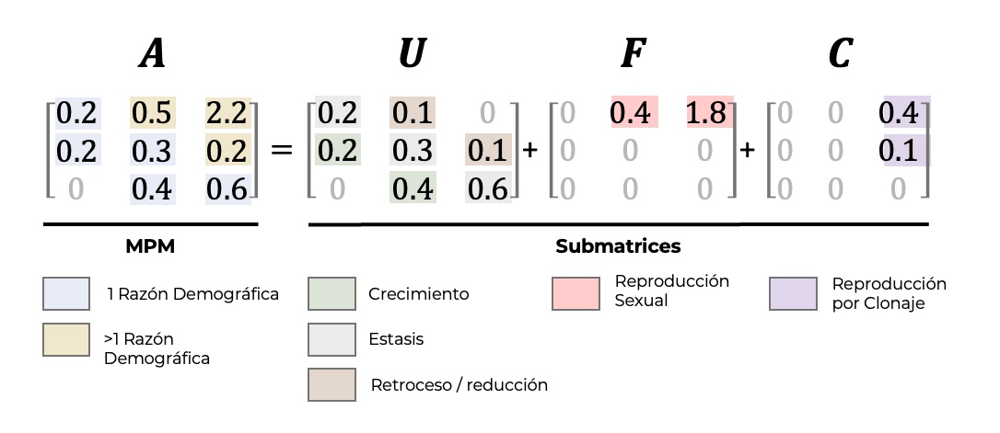

Código
library(DiagrammeR)
library(Rage)
library(Rcompadre)
library(dplyr)
library(purrr)Las matrices U, F y C descomponen la dinámica poblacional en sus componentes demográficos fundamentales: supervivencia y crecimiento, fecundidad y transiciones complementarias. Este capítulo introduce estas matrices como herramientas conceptuales y analíticas para representar explícitamente los procesos que estructuran la dinámica poblacional.
Raymond L. Tremblay
En los modelos de proyección poblacional estructurados, la matriz de proyección puede descomponerse en componentes que representan procesos demográficos distintos. Las matrices U, F y C permiten separar la dinámica poblacional en supervivencia y crecimiento (U), fecundidad (F) y otras transiciones complementarias (C), facilitando la interpretación biológica y analítica del modelo.
En este capítulo se presenta la lógica conceptual de esta descomposición, mostrando cómo cada matriz captura un conjunto específico de procesos del ciclo de vida. La matriz U describe las transiciones no reproductivas entre estadios, incluyendo estasis y crecimiento. La matriz F representa la contribución reproductiva a los estadios iniciales, integrando producción reproductiva y supervivencia temprana. En casos particulares, la matriz C permite incorporar transiciones adicionales que no encajan directamente en U o F, ampliando la flexibilidad del modelo.
La descomposición en U, F y C constituye un paso intermedio clave entre la definición de transiciones individuales y el análisis de propiedades poblacionales. Este enfoque permite evaluar separadamente el papel de cada proceso demográfico en el crecimiento poblacional y sirve como base para análisis posteriores de elasticidad, sensibilidad, LTRE y simulaciones. A diferencia de capítulos previos, este capítulo se enfoca en la representación estructural explícita de los procesos demográficos dentro de la matriz, proporcionando un puente entre la biología del ciclo de vida y las herramientas analíticas desarrolladas más adelante.
library(DiagrammeR)
library(Rage)
library(Rcompadre)
library(dplyr)
library(purrr)A continuación se describe cómo definir y calcular las matrices U, F y C a partir de transiciones demográficas y datos empíricos.
Para facilitar los análisis e interpretaciones es necesario tener claro el ciclo de vida de la especie y el origen de los parámetros de transiciones, fecundidades y clonaje. Para lo cual, hay que recordar que la matriz A (matA), para evaluar varios de los parámetros del crecimiento poblacional, es el resultado de la suma de las submatrices de transición, de fecundidad y de clonación. Un ejemplo de por qué es necesario crear submatrices es que, para calcular la supervivencia promedia y sus intervalos de confianza, se necesita la matriz de transiciones matU separado de la matriz de fecundidad, mientras que para calcular la tasa de crecimiento poblacional, se necesita matA. En adición si uno quiere un estimado de la endogamia es importante reconocer la importancia de la clonación en la dinámica poblacional, se necesita incluir matC. Por consecuencia, es importante tener claro el ciclo de vida y la forma de reproducción de la especie que se está estudiando. La definición de las matrices U, F y C se basa directamente en los procesos de transición descritos en el capítulo sobre transiciones demográficas. La combinación de las matrices U, F y C permite derivar la tasa de crecimiento poblacional discutida en el capítulo sobre crecimiento poblacional.
Definiciones de las matrices

La matriz de transiciones matU contiene únicamente entradas que representan cambios entre estados vitales: crecimiento, permanencia (estasis) y retrogresión (decrecimiento). Por lo tanto, toda la información relacionada con reproducción y clonación está excluida de esta matriz.
Como ejemplo, consideremos un modelo con tres etapas de vida: plántulas, juveniles y adultos, donde se observan todas las transiciones posibles. En este modelo, los juveniles no pueden regresar a ser plántulas, ya que fisiológicamente las plántulas presentan características distintas a individuos que ya han desarrollado raíces y hojas.
Recuerde que los individuos incluidos en un mismo estadio deben tener probabilidades similares de crecimiento, supervivencia y fecundidad.
En cambio, los adultos sí pueden regresar a la etapa juvenil (al menos como individuos no reproductivos), posiblemente como consecuencia de daño por herbivoría, que reduce su tamaño.
matU <- rbind(
c(0.1, 0.0, 0.0),
c(0.5, 0.3, 0.05),
c(0.001, 0.4, 0.8)
)
stages <- c("Plantulas", "Juvenil", "Adulto")
plot_life_cycle(matU, stages = stages)La matriz F se construye a partir de los parámetros de fecundidad calculados en el capítulo sobre cálculo de fecundidad. Al analizar la figura siguiente, se observa que algunos individuos en la segunda etapa pueden producir plántulas. Por ello, sería más apropiado cambiar el nombre de esta etapa de “juvenil” a “adultos pequeños”, ya que el término juvenil podría interpretarse como individuos no reproductivos.
En el ciclo de vida se aprecia que las plántulas provienen tanto de adultos pequeños como de adultos grandes. Esta separación en categorías de adultos es recomendable cuando las probabilidades de fecundidad difieren significativamente entre clases de tamaño.
Por ejemplo, en el estudio de la demografía de Guarianthe aurantiaca (Mondragón, 2009), se definieron dos categorías reproductivas:
Los resultados mostraron una gran diferencia en la producción de plántulas:
matF <- rbind(
c(0.0, 0.007, 0.121),
c(0.0, 0.0, 0.0),
c(0.0, 0.0, 0.0)
)
stages <- c("Plántulas", "Adultos Pequeños", "Adultos Grande")
plot_life_cycle(matF, stages = stages)Esta matriz representa la contribución de la reproducción asexual en la dinámica poblacional. Es fundamental comprender que la propagación vegetativa origina un ramet, un individuo ecológicamente independiente, aunque genéticamente idéntico al progenitor (genet) [@cook1983clonal].
Por ejemplo:
¿Por qué no incluir ramets en la matriz de fecundidad (matF)?
Los individuos generados por propagación vegetativa difieren radicalmente de las plántulas:
Por ello, su incorporación en la matriz ocurre generalmente en estadios superiores. El aporte se hace a la categoría de juveniles. Esto puede provocar que en la matriz matA las entradas superen el rango típico (0–1), ya que se suman transiciones y fecundidad vía ramets.
Al estudiar especies con reproducción clonal, es esencial diferenciar entre ramet y genet:
En orquídeas, cada seudobulbo puede considerarse un ramet, mientras que la suma de todos los seudobulbos conforma el genet. Existen enfoques para incorporar esta distinción en las matrices demográficas y, por ende, integrar el concepto de clonación en los estimados de adecuación (McGraw & Caswell, 1996).
A continuación, se muestra un ejemplo de matriz de clonación. En la base de datos COMPADRE, el único caso registrado corresponde a Cypripedium calceolus (Garcı́a, Goni & Guzmán, 2010). Este ejemplo también permite ilustrar cómo extraer matrices con características específicas desde la base de datos COMPADRE.
compadre <- cdb_fetch("compadre")En el siguiente script se calcula la suma de todos los valores de la matriz de clonación (matC). Cualquier especie que presente un valor mayor a 0 en esta matriz se considera que posee clonación en al menos una etapa de su ciclo de vida.
Del análisis se observa que 8,304 especies no tienen información registrada en matC. Por otro lado, una población cuya suma en matC sea superior a cero (por ejemplo, ≥ 0.001) se clasifica como una especie con clonación.
#Encontrar MPP con matC clonaje no cero
compadre$clonality <- 0
for (i in 1:dim(compadre)[1]) {
compadre$clonality[i] <- sum(compadre$mat[[i]]@matC) # suma de todos los valores de la matriz de clonación
}
#table(compadre$clonality) # Remover el "#" para ver todos los resultados,
head(table(compadre$clonality)) #Se observa la suma de las matrices de clonaje, hay 8304 especies que no tiene información en matC, una población con un matC que su suma es 0.001, etc.
0 0.001 0.0075 0.008006 0.008513 0.009
8304 1 1 1 1 1 summary(compadre$clonality[compadre$clonality>0],) # Resumen estadístico de la clonación en la base de datos de las especies que tienen clonación Min. 1st Qu. Median Mean 3rd Qu. Max. NA's
0.0010 0.2625 0.8550 3.4643 2.2227 347.3600 7 # crear un histograma de las especies que tienen clonación (excluir las especies que no tiene clonación)
#hist(compadre$clonality[compadre$clonality > 0], breaks = 50, main = "Histogram of #Clonality in COMPADRE", xlab = "Clonality (sum of matC)", ylab = "Frequency")Es fundamental aplicar controles de calidad a la base de datos, por ejemplo, para detectar entradas faltantes en la matriz principal (matA).
En el capítulo COMPADRE y las orquídeas se utiliza esta base de datos y se describen diversas estrategias para limpieza y selección de matrices con características específicas, garantizando que los análisis se realicen sobre datos completos y confiables.
compadre_flagged <- cdb_flag(compadre, checks = "check_NA_A") # Evaluar que la matA no es nula (no suma a zero)Ahora filtrar para orquídeas solamente y para aquellos con matC no nulo (clonality >0). Se observa que solamente dos poblaciones tienen información de clonación.
orchid_clonal <- compadre_flagged %>%
filter(Family == "Orchidaceae") %>% # filtrar para orquídeas
filter(clonality > 0) # filtrar para aquellos con matC no nulo
# Visualizar la base de datos de orquídea, se observa solamente dos matrices de clonaje
unique(orchid_clonal$SpeciesAuthor) # hay dos poblaciones solamente en toda la base de datos[1] "Cypripedium_calceolus_2" "Cypripedium_calceolus_3"Seleccionamos solamente un ejemplo la Matriz de Cypripedium calceolus, #24262 (Garcı́a, Goni & Guzmán, 2010), que es la matriz promedio de la tercera población (SpeciesAuthor == Cypripedium_calceolus_3).
Cyp_cal_2 <- orchid_clonal %>%
filter(MatrixID == 242624)
#Cyp_cal_2En esta código, se evaluá todas las orquídeas donde tiene una matriz de clonaje y se filtra para la que tiene la suma de matC máxima. En este caso, es la misma población que se seleccionó en el script anterior.
for (i in 1:dim(orchid_clonal)[1]) {
orchid_clonal$clonality[i] <- sum(orchid_clonal$mat[[i]]@matC) # suma de todos los valores de la matriz de clonación
}
Orchid_clonal_max=orchid_clonal %>%
filter(clonality == max(clonality)) # filtrar para la suma de matC máximo
Orchid_clonal_maxA COM(P)ADRE database ('CompadreDB') object with 1 SPECIES and 1 MATRICES.
# A tibble: 1 × 61
mat MatrixID SpeciesAuthor SpeciesAccepted CommonName Kingdom Phylum
<list> <int> <chr> <chr> <chr> <chr> <chr>
1 <CompdrMt> 242624 Cypripedium_cal… Cypripedium ca… Lady slip… Plantae Magno…
# ℹ 54 more variables: Class <chr>, Order <chr>, Family <chr>, Genus <chr>,
# Species <chr>, Infraspecies <chr>, InfraspeciesType <chr>,
# OrganismType <chr>, DicotMonoc <chr>, AngioGymno <chr>, Authors <chr>,
# Journal <chr>, SourceType <chr>, OtherType <chr>, YearPublication <chr>,
# DOI_ISBN <chr>, AdditionalSource <chr>, StudyDuration <chr>,
# StudyStart <chr>, StudyEnd <chr>, ProjectionInterval <chr>,
# MatrixCriteriaSize <chr>, MatrixCriteriaOntogeny <chr>, …Seleccionamos como ejemplo la matriz correspondiente a Cypripedium calceolus (ID #242624) (Garcı́a, Goni & Guzmán, 2010). Este estudio tuvo como objetivo evaluar la hipótesis del modelo central-marginal, que plantea que las poblaciones situadas en los márgenes de su distribución son más susceptibles que aquellas ubicadas en el centro. La especie fue modelado basado en 6 etapas, “muy pequeñas”, “pequeñas”, “intermedias”, “grandes”, “muy grandes” y “extra grandes” en adición de una etapa de “latencia”. García et al. (Garcı́a, Goni & Guzmán, 2010) señalan que en Cypripedium calceolus es difícil diferenciar entre reclutamiento sexual y asexual, y que la percepción de reclutamiento asexual probablemente sea mucho más común que la sexual (Kull, 1995; Garcı́a, Goni & Guzmán, 2010).
Cyp_cal_2 <- orchid_clonal %>%
filter(MatrixID == 242624)
Cyp_cal_2A COM(P)ADRE database ('CompadreDB') object with 1 SPECIES and 1 MATRICES.
# A tibble: 1 × 61
mat MatrixID SpeciesAuthor SpeciesAccepted CommonName Kingdom Phylum
<list> <int> <chr> <chr> <chr> <chr> <chr>
1 <CompdrMt> 242624 Cypripedium_cal… Cypripedium ca… Lady slip… Plantae Magno…
# ℹ 54 more variables: Class <chr>, Order <chr>, Family <chr>, Genus <chr>,
# Species <chr>, Infraspecies <chr>, InfraspeciesType <chr>,
# OrganismType <chr>, DicotMonoc <chr>, AngioGymno <chr>, Authors <chr>,
# Journal <chr>, SourceType <chr>, OtherType <chr>, YearPublication <chr>,
# DOI_ISBN <chr>, AdditionalSource <chr>, StudyDuration <chr>,
# StudyStart <chr>, StudyEnd <chr>, ProjectionInterval <chr>,
# MatrixCriteriaSize <chr>, MatrixCriteriaOntogeny <chr>, …Aquí visualizamos las etapas del ciclo de vida de Cypripedium calceolus y la matriz de transición, fecundidad y clonación.
Cyp_cal_2$mat[[1]] #[[1]] ver las etapas del ciclo de vida de esta población con las tres matrices MatrixClassOrganized MatrixClassAuthor
1 dorm Dormant
2 active Smallest
3 active Small
4 active Intermediate
5 active Large
6 active Extra large
matA:
1 2 3 4 5 6
1 0.20 0.04 0.03 0.04 0.03 0.00
2 0.00 0.35 0.05 0.04 0.08 0.12
3 0.16 0.43 0.39 0.17 0.06 0.09
4 0.15 0.00 0.31 0.52 0.13 0.15
5 0.49 0.00 0.11 0.29 0.68 0.46
6 0.00 0.00 0.00 0.00 0.07 0.60
matU:
1 2 3 4 5 6
1 0.20 0.04 0.03 0.04 0.03 0.0
2 0.00 0.35 0.00 0.00 0.00 0.0
3 0.16 0.43 0.39 0.00 0.00 0.0
4 0.15 0.00 0.31 0.52 0.13 0.0
5 0.49 0.00 0.11 0.29 0.68 0.4
6 0.00 0.00 0.00 0.00 0.07 0.6
matF:
1 2 3 4 5 6
1 0 0 0.00 0.00 0.00 0.00
2 0 0 0.05 0.04 0.08 0.12
3 0 0 0.00 0.00 0.00 0.00
4 0 0 0.00 0.00 0.00 0.00
5 0 0 0.00 0.00 0.00 0.00
6 0 0 0.00 0.00 0.00 0.00
matC:
1 2 3 4 5 6
1 0 0 0 0.00 0.00 0.00
2 0 0 0 0.00 0.00 0.00
3 0 0 0 0.17 0.06 0.09
4 0 0 0 0.00 0.00 0.15
5 0 0 0 0.00 0.00 0.06
6 0 0 0 0.00 0.00 0.00Podemos visualizar las transiciones de las diferentes etapas por clonación. Usa la función plot_life_cycle de la librería Rage para visualizar el ciclo de vida. En este caso, las etapas son “Dormant”, “Smallest”, “Small”, “Inter”, “Large”, “ExtraLarge” y la matriz de clonación es la matC. Si se reemplaza la matriz de clonación por la matriz matA se puede ver el ciclo de vida con todas las transiciones, fecundidad y clonación.
#remotes::install_github("jonesor/Rage") # Instalar de Github para la más reciente versión
library(Rage)
matC = matC(Cyp_cal_2) # extraemos la matriz de clonación de este especie/población
plot_life_cycle(
matC[[1]], # Note aqui se seleciona solamente la matriz de clonaje
stages = c("Dormant", "Smallest", "Small", "Inter", "Large", "ExtraLarge"),
node_order = c(2, 1, 3, 4, 5, 6)
)Ver cual las lista especie tienen incluido la matriz de clonación, matC. En esta lista vemos 825 filas, donde esto incluye las poblaciones muestreadas donde matC > 0. Hay 108 especies únicas donde la matC esta incluida en la dinámica de la población.
Clonal_Species = compadre %>%
filter(clonality > 0) %>% # filtrar para aquellos con matC no nulo
select(mat, SpeciesAuthor, Family, clonality) %>% # seleccionar las columnas de interes
arrange(desc(clonality)) # ordenar por la columna de clonación
head(Clonal_Species) # ver las primeras 6 poblacionesA COM(P)ADRE database ('CompadreDB') object with ?? SPECIES and 6 MATRICES.
# A tibble: 6 × 4
mat SpeciesAuthor Family clonality
<list> <chr> <chr> <dbl>
1 <CompdrMt> Hypochaeris_radicata_2 Asteraceae 347.
2 <CompdrMt> Agropyron_repens Poaceae 225
3 <CompdrMt> Myrsine_guianensis Primulaceae 214.
4 <CompdrMt> Agropyron_repens Poaceae 150
5 <CompdrMt> Agropyron_repens Poaceae 100
6 <CompdrMt> Agropyron_repens Poaceae 75 Hay 44 familias de plantas donde la matC esta incluida en la dinámica.
# Ver la lista de familias únicas con clonación
Families = (as.data.frame(sort(unique(Clonal_Species$Family))))
head(Families) # ver las primeras 6 familias sort(unique(Clonal_Species$Family))
1 Adoxaceae
2 Amaryllidaceae
3 Anacardiaceae
4 Araceae
5 Arecaceae
6 AristolochiaceaeBromeliaceae = Clonal_Species %>%
filter(Family == "Bromeliaceae") %>% # fpara la familia de bromelias
select(mat, SpeciesAuthor, Family, clonality) %>% # seleccionar las columnas de interés
arrange(desc(clonality)) # ordenar por la columna de clonación
BromeliaceaeA COM(P)ADRE database ('CompadreDB') object with ?? SPECIES and 49 MATRICES.
# A tibble: 49 × 4
mat SpeciesAuthor Family clonality
<list> <chr> <chr> <dbl>
1 <CompdrMt> Tillandsia_brachycaulos Bromeliaceae 5.32
2 <CompdrMt> Tillandsia_brachycaulos Bromeliaceae 5.04
3 <CompdrMt> Tillandsia_brachycaulos Bromeliaceae 4.77
4 <CompdrMt> Tillandsia_brachycaulos Bromeliaceae 3.94
5 <CompdrMt> Aechmea_nudicaulis Bromeliaceae 1.39
6 <CompdrMt> Aechmea_nudicaulis Bromeliaceae 1.26
7 <CompdrMt> Aechmea_nudicaulis Bromeliaceae 1.21
8 <CompdrMt> Aechmea_nudicaulis Bromeliaceae 1.20
9 <CompdrMt> Aechmea_nudicaulis Bromeliaceae 1.13
10 <CompdrMt> Aechmea_nudicaulis Bromeliaceae 1.10
# ℹ 39 more rowsSeleccionamos una especie de bromelia, Aechmea nudicaulis (Sampaio, Picó & Scarano, 2005), que tiene una matriz de clonación. En este caso, la matriz de clonación es la matC y la matriz de transición es la matU. La matriz de fecundidad no está incluida en este modelo. Visualizamos la matriz de clonación y la matriz de transición. En este caso, la matriz de clonación es la matC y la matriz de transición es la matU. La matriz de fecundidad no está incluida en este modelo.
Aechmea = compadre %>%
filter(clonality > 0) %>% # filtrar para aquellos con matC no nulo
filter(SpeciesAuthor == "Aechmea_nudicaulis") %>% # para
arrange(desc(clonality))
Aechmea = Aechmea %>%
filter(clonality == max(clonality)) # filtrar para la suma de matC máximo
Ae_matC = matC(Aechmea)
plot_life_cycle(
Ae_matC[[1]],
stages = c("rametes joven", "rametes vegetativo", "rametes con flores"),
node_order = c(1, 2, 3)
)La dinámica de crecimiento clonal en la bromelia Aechmea nudicaulis (Sampaio, Picó & Scarano, 2005) difiere de la observada en Cypripedium calceolus. En Aechmea nudicaulis, la clonación ocurre mediante la producción de hijuelos (offsets) que se separan de la planta madre y se convierten en nuevos individuos. En cambio, en Cypripedium calceolus, la clonación se produce a través de rizomas que permanecen conectados a la planta madre.
Sin embargo, en ambos casos surge la pregunta: ¿Cuándo hablamos de crecimiento vegetativo y cuándo de clonación?
En Cypripedium calceolus, el aumento en tamaño y número de tallos mediante rizomas no se considera clonación mientras permanezcan conectados a la planta madre; solo se considera clonación cuando se separan y se vuelven independientes. De manera similar, en Aechmea nudicaulis, la producción de hijuelos representa crecimiento vegetativo hasta que estos se desprenden y se convierten en individuos autónomos.
Una revisión exhaustiva sobre este tema se encuentra en Cook (Cook, 1983) y Vallejo et al. (Vallejo-Marı́n, Dorken & Barrett, 2010).
Janovsky et al. (Janovskỳ, Herben & Klimešová, 2017) destacan la relevancia de la clonación en el crecimiento y la dinámica poblacional. Al analizar la base de datos COMPADRE, encontraron que la mayoría de las especies con clonación no incluyen una matriz matC, y que muchos estudios que reconocen la clonación como factor importante tampoco la incorporan en sus modelos.
Esta omisión es preocupante, ya que la clonación puede:
Por lo tanto, es crucial integrar la clonación en los modelos de dinámica poblacional y en estudios evolutivos cuando esté presente.
Revisión
RLT: Nov 26th, 2024
Demetria: Feb 11th, 2025
RLT: Feb 12th, 2025
RLT: Apr 19th, 2025
RLT: May 27, 2025